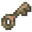

Museum
| Sternentautaler Museum & Bibliothek | |
 | |
 | |
| Öffnungszeiten: | 08:00 Uhr bis 18:00 Uhr |
| Ruhetage: | Stadt Festtage |
| Adresse: | Im östlichen Stadtgebiet, südlich des Schmiedes. |
| Bewohner: | |
Das Museum befindet sich in der südöstlichen Ecke von Pelikan Stadt, südlich des Schmiedes.
Das Museum besteht aus zwei Teilen: einer Bibliothek sowie einer Galerie zur Ausstellung der Sammlung des Museums. Zu Beginn des Spiels ist die gesamte Sammlung leer. Gunther, der dort arbeitet, wird den Spieler um Hilfe bei der Wiederherstellung der Museumssammlung bitten, indem dieser Artefakte und Mineralien (von denen viele in Minen gefunden werden können) spendet sowie die fehlenden Bücher der Bibliothek ausgräbt. Es kann jeweils nur ein Exemplar eines bestimmten Gegenstandes gespendet werden.
Penny unterrichtet jeden Dienstag, Mittwoch und Freitag die Kinder der Stadt, Vincent und Jas, in der Bibliothek.
Spendenbelohnungen
Gunther schenkt dem Spieler Gegenstände als Belohnung, wenn die Sammlung auf eine bestimmte Größe angewachsen ist oder wenn spezielle Artefakte gespendet wurden.
Gesamtspenden
Es können insgesamt 95 Gegenstände an das Museum gespendet werden.
| Gegenstände gespendet | Belohnung |
|---|---|
| 5 | |
| 10 | |
| 15 | |
| 20 | |
| 25 | |
| 30 | |
| 35 | |
| 40 | |
| 50 | |
| 60 |  Rostiger Schlüssel (Gunther kommt vorbei und übergibt ihn) |
| 70 | |
| 80 | |
| 90 | |
| 95 (alle Gegenstände) |
Mineralienspenden
Es gibt insgesamt 53 Mineralien, die man spenden kann.
| Mineralien gespendet | Belohnung |
|---|---|
| 11 | |
| 21 | |
| 31 | |
| 41 | |
| 50 |
Artefaktspenden
Es gibt insgesamt 42 Artefakte, die man spenden kann.
Um die Belohnung "Verbrannte Opfergabe" zu erhalten, muss man bereits mindestens 10 Artefakte gespendet haben, dabei müssen die Seltene Scheibe sowie das Zwergengerät Teil dieser 10 Artefakte sein. Die 11. (oder spätere) Spende, die diese Bedingungen erfüllt, gewährt nun die "Verbrannte Opfergabe".
| Artefake gespendet | Belohnung |
|---|---|
| 11 Artefakte einschließlich: |
|
| 15 Artefakte | |
| 20 Artefakte | |
| 3 Artefakte einschließlich: |
|
| 3 Artefakte einschließlich: |
|
| 5 Artefakte einschließlich: |
|
Bücher
- Siehe Hauptartikel Verlorene Bücher
Erfolge
Es gibt zwei Erfolge, die man durch das Spenden von Artefakten und Mineralien an das Museum erhalten kann:
- Fundgrube (Spende dem Museum 40 verschiedene Gegenstände.)
- Eine vollständige Sammlung (Vervollständige die Museumskollektion.)
Anmerkungen
- Es stehen insgesamt 102 Felder zur Verfügung, auf denen Spenden platziert werden können, allerdings können insgesamt lediglich 95 Gegenstände gespendet werden. Eine Anzahl von Feldern in der Mitte des größten Tisches kann nicht erreicht werden, um den darauf befindlichen Gegenstand zu untersuchen, so dass es ratsam ist, diesen Bereich leer zu lassen.
- Wenn man bereits Elemente in diese Felder gesetzt haben sollte, kann man diese verschieben, indem man beim Spenden eines weiteren Gegenstandes auf den (falsch platzierten) Gegenstand klickt und ihn neu platziert.
- Eines der Bücher scheint lediglich Kauderwelsch zu enthalten, dies ist allerdings ein Akrostichon, das darauf hinweist, wo die drei Geheimen Statuen in Pelikan Stadt versteckt wurden. Ein Akrostichon ist ein Rätsel, bei dem der erste Buchstabe eines jeden Wortes auf die Lösung hinweist.
- S.U.P.E.R.S.E.E.G.U.R.K.E.S.T.A.D.T.
- E.N.T.E.N.M.A.Y.O.N.N.A.I.S.E.S.A.L.O.O.N.
- K.O.M.I.S.C.H.E.S.B.R.O.E.T.C.H.E.N.S.P.I.E.L.Z.E.U.G.K.I.S.T.E.
- Die Platzierung der entsprechenden Gegenstände in die jeweiligen in der ganzen Stadt verborgenen Schränke führt zu den versteckten Statuen. Wenn man beispielsweise Enten-Mayonnaise in eine versteckte lila Schachtel im hinteren Teil der Kneipe (englisch: Saloon) platziert, erhält man den geheimen Gegenstand ??Pinke Zitrone??.

Museumseinrichtung mit schattierten unerreichbaren Plätzen

Ein Beispiel einer organisierten vollständigen Sammlung
Geschichte
- 1.4: Spendenbelohnungen für 35, 70, 80 und 90 Spenden hinzugefügt. Möglichkeit hinzugefügt die Museums-Sammlung nach Komplettierung neu zu reorganisieren. Fehler behoben, bei dem Gegenstände, die im Inventar bewegt wurden, das Spenden ans Museum verhinderte.
| Gebäude | ||
|---|---|---|
| Händler | Abenteurergilde • Anglerbedarf • Bruchbude • Buchhändler • Eisstand • Geheimes Walnusszimmer von Mr. Qi • Inselhändler • Joja-Markt • Kasino • Klinik • Kneipe • Marnies Ranch • Oase • Pierres Gemischtwarenladen • Reisewagen • Schmied • Schreinerladen • Turm des Zauberers • Vulkanzwerg • Wüstenhändler | |
| Häuser | Bauernhaus • Baumhaus • Bergstraße 24 • Elliotts Hütte • Flussstraße 1 • Flussstraße 2 • Haus des Bürgermeisters • Insel-Farmhaus • Leahs Hütte • Weidengasse 1 • Weidengasse 2 • Wohnwagen • Zelt | |
| Bauernhof Gebäude | Bauernhof | Brunnen • Fischteich • Gewächshaus • Hühnerstall • Hütte • Mühle • Pferdestall • Schleim-Stall • Schuppen • Silo • Stall |
| Spezial | Erdobelisk • Goldene Uhr • Hof-Obelisk • Insel-Obelisk • Junimo-Hütte • Wasserobelisk • Wüsten Obelisk | |
| andere Gebäude | Gemeinschaftszentrum • Hexenhütte • Hundehütte • Insel-Außenstelle • Joja-Warenhaus • Kanalisation • Kino • Museum • Spa | |